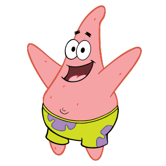
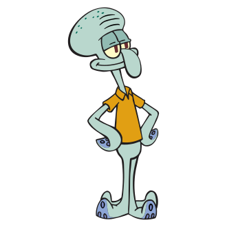
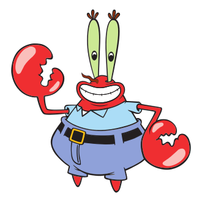
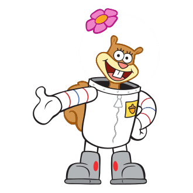

Summary
A square yellow sponge named SpongeBob SquarePants lives in a pineapple with his pet snail, Gary, in the city of Bikini Bottom on the floor of the Pacific Ocean. He works as a fry cook at the Krusty Krab. During his time off, SpongeBob has a knack for attracting trouble with his starfish best friend
Characters
Spongebob Squarepants

Description
A friendly, innocent, and eager sea sponge,SpongeBob is obsessively attached to the Krusty Krab, a local fast food restaurant, and prefers it SpongeBob enjoys blowing bubbles, fishing for jellyfish, and learning karate.
Patrick star
Description
An overweight pink starfish, Patrick lives underneath a rock in the underwater city of Bikini Bottom, right next door to Squidward Tentacles' moai. His most significant character traits are his laziness and low intelligence, although he occasionally shows that he is smarter than he seems. His ignorance often gets him and his best friend, SpongeBob SquarePants, into trouble. Patrick is unemployed and a self-proclaimed expert in the "art of doing nothing"just like me.
Squidward Tentacles
Description
Although his name has the word "squid" in it and he has only six tentacles, Squidward is an anthropomorphic octopus. He lives in a moai between SpongeBob SquarePants' and Patrick Star's houses. The character is portrayed as short-tempered, impatient, arrogant, condescending, bitter, and misanthropic, and he hates his two neighbors' constant disruptive antics. However, the pair are unaware of Squidward's dislike towards them and see him as a friend. Squidward works as a cashier at the Krusty Krab restaurant, a job which he does not enjoy.
Mr.Krabs
Description
Krabs owns and operates the Krusty Krab, a prominent fast food restaurant located in the underwater city of Bikini Bottom. He resides in a hollow anchor with his daughter Pearl, who is a teenage sperm whale. Krabs is obsessed with money and dislikes spending it, but will go to great lengths to make Pearl happy. He tends to worry about his riches and neglect the needs of his employees, SpongeBob and Squidward. He is in a romantic relationship with Mrs. Puff and shares a rivalry with his former best friend Plankton, who owns a struggling restaurant called the Chum Bucket located across the street from the Krusty Krab.
Sandy Cheeks
Description
Sandy is a close friend of SpongeBob SquarePants. She is a proud Texan and speaks in a stereotypical Southern drawl. In order to live underwater, Sandy resides in a bubble-like dome and wears an atmospheric diving suit when outside her house. Inside the treedome, her normal attire consists of a green and purple bikini. Conversely, as revealed in Tea at the Treedome, other characters must wear "water helmets" with opposite functionality when visiting her house. Sandy possesses extraordinary scientific skills such as the ability to construct complex inventions. Sandy is shown to possess a number of tough, tomboyish character traits and interests; she is skilled at karate, engages in bodybuilding, and is a rodeo champion. She is also a close friend of Patrick Star, SpongeBob's best friend and neighbor, though she sometimes gets annoyed by him.